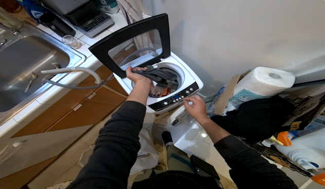
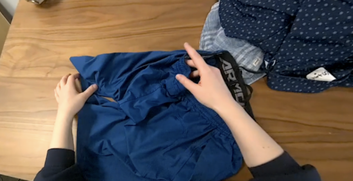
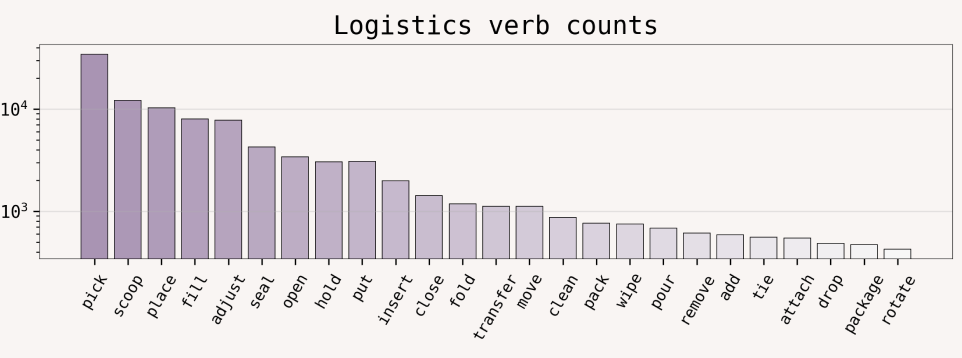
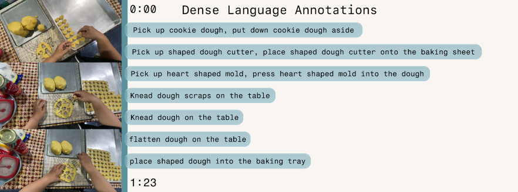

Dataset Details
Access
Egocentric RGB Video
First-person RGB recordings capturing fine-grained manipulation tasks from the wearer’s perspective.


3D Hand Pose Signals
High-frequency 3D joint trajectories capturing detailed hand articulation and interaction.
Task Descriptions
Natural language annotations describing task goals, structure, and execution stages across varying horizons.

